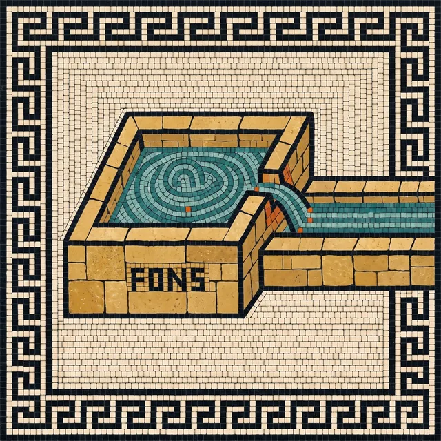
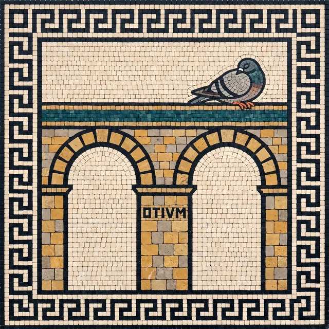

Built because my tools wouldn't talk.
Open because it reads all of them.
Every product team runs 8–12 tools. Each one sees a sliver. I got tired of being the integration layer between them, so I wrote one. Then I put it on GitHub under MIT, because a thing that reads your whole business has to be readable back.

FONS. The spring, before anything has run. The app’s front door.
The problem nobody talks about
Your analytics tool knows what happened. Your support tool knows who's upset. Your project tracker knows what shipped. Your ad platform knows what you spent. But none of them talk to each other — so you spend hours every week playing translator between tabs, trying to piece together a story that already exists if only someone would connect the dots.
So I connected them
Duct reads across your existing tools and synthesizes the cross-tool story that has been hiding in plain sight. Not another dashboard. Not another data warehouse project you will abandon in Q3. And when the answer is “pause that campaign” or “mark that GA4 event,” Duct can prepare the change and show you a preview. It cannot apply it. Only you can. That boundary lives in code, not in a prompt.
Then I open sourced it, and here is why
Read access to your ads, analytics and revenue is a lot to hand a tool, and a lot more to hand a tool built by one person. I cannot ask for that trust; I can show the code. Every prompt, every API call and the approval gate itself are in the repository under MIT. Download the app and I run the service for you; clone it and nothing touches me. It is free with your own keys, and stays that way. A paid plan will bundle the models later, for teams that would rather hold no keys at all. What runs where, and what will cost money has its own page.
A duct is not a source.
It’s what carries.
Duct is Latin — ductus, a leading. It is the same word sitting inside aquaeductus: water, led. Rome’s aqueducts never made a drop of water. The springs already had it. What Rome built was the channel that carried it, on gravity alone, from where the water happened to be to where people actually lived.
Most of that engineering was invisible. The aqueducts ran underground and unremarkable for miles, and the arches everyone photographs exist only because a valley got in the way. The Nîmes aqueduct fell about twelve metres across fifty kilometres — a slope you could not see standing next to it, held steady over every kind of ground in between.
Your business already has the data. Ads, analytics, search, support, revenue — the springs are fine. What is missing is the channel: something that crosses a dozen APIs and three operating systems and arrives where the decision actually gets made. When an aqueduct works, nobody thinks about the aqueduct. They just have water.

Three agents today.
More on the way.
Each one reads across the twelve connected sources instead of one at a time, and when the answer is a change, it prepares the change and waits for you. Every connector and every prompt is in the repo, so this list is the list, not a roadmap.
Insights
Ask “why did signups drop last week” and get an answer that reads Google Ads, GA4 and Stripe together. A second agent re-checks every number before it reaches you, and the brief it writes cites its sources.
SEO audit
Paste a URL. Duct crawls the site, reads the technical and content signals, and hands back a prioritised report. It is the free front door: no account needed to run one.
Content Studio
A plan on a board, a post per card, slides and images generated for each, one click to publish to nine networks. Results come back onto the card, so the next plan learns from the last one.
Principles, not platitudes
The agent proposes. You decide.
Duct reads by default. When it can fix something, it prepares a change set, shows you a preview and a guardrail check, and waits. The agent can propose and inspect; it cannot approve or apply. That decision lives in code the model never sees, and rollback is part of the contract.
Ship the insight, skip the noise
I don’t build features to pad a changelog. Every agent, every connector and every guardrail exists because it saved me real time on a real decision first.
Small enough to answer you directly
No megacorp behind this and no support queue in front of it. File an issue and you are talking to the person who wrote the line. That is the whole advantage, and it is why the roadmap is public.
You can read every line
Every data source, every API call, every prompt, every piece of logic that generates a signal is on GitHub. Not documented and inspectable in principle. Actually there, actually readable, actually forkable.

Shirish Kadam
Maintainer
Product manager and engineer. Most of my career has gone into building products from scratch and scaling them at fin-tech and ed-tech companies, a lot of it AI and ML systems serving millions of users. Open-source contributor throughout.
Every one of those jobs had the same gap: the answer to “why did that number move” was never inside one tool, and somebody senior burned a morning every week stitching it together by hand. Duct is the thing I wanted for that job, so I built it and made it MIT.
Design decisions are argued in the open. GitHub is the best place to find me.
Read it, run it, break it.
Duct is MIT licensed, on your own keys or your ChatGPT plan. Star the repo if it is useful, open an issue if it is not.
MIT licensed · Bring your own keys · No account needed to run it yourself